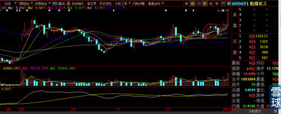
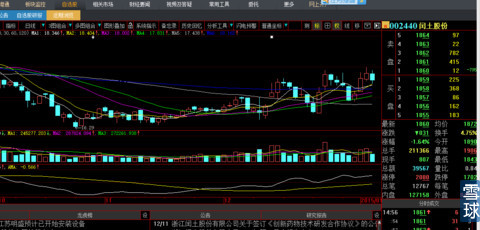
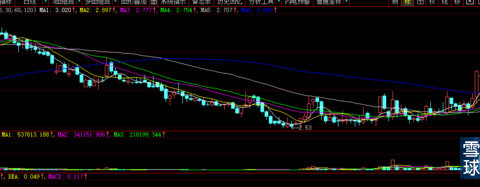
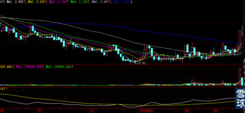
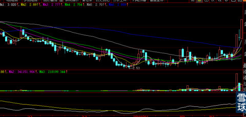
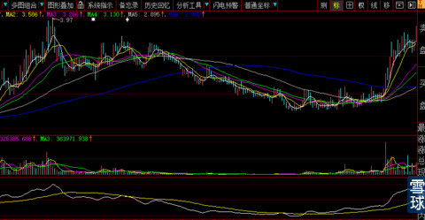
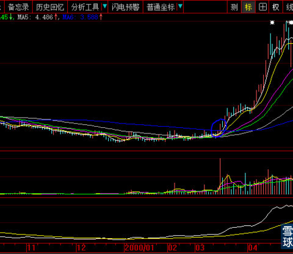
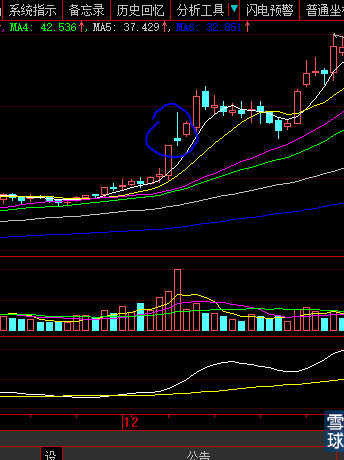
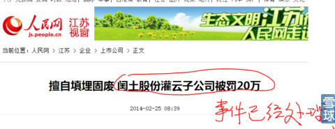

今天收盘看到下图。总算找到一种很简单就能清晰表达需要很多文字才能说清楚的意思。下图是600691阳煤化工今天收盘图。见下图红圈处：

下图是我密切关注1个多月的002440闰土股份，之前已经说过，我只先跟600352浙江龙盛。下图是闰土股份今天的收盘日线图。我现在就可以明确告诉你：闰土股份就在走上图红圈位置。

大家看嘛：上图高点一个比一个高点创新高，低点也是一个低点比一个低点抬高，支撑股价的均线多头排列正在缝隙悄无声息的扩大且发散。这就是股价临门一脚的倒计时刻。任何大资金只要坐庄无论如何也隐藏不了的痕迹。
所以我今天上午在18.7元建仓完毕同时就在雪球公开自选18.7元提示买入并放在置顶位置，在最正确的时间、地点、做正确的事情。使你在泥潭中挣扎的泪水少一点
明天是2015年1月8日，002440闰土股份走成这样你们会热情高涨，涨时看涨的情绪化激情四溢渲染。

再下一天也就是2015年1月9日要是下图这样走，大家会不会又是莫衷一是了？呵呵

再下一日就会走成下图这样，也就是2015年1月12日下周一。
再后来，预计股价会大致如下图这样走半个月左右，也就是大致2周时间。

接下来，会演化成下图这样，从炒作开始到结束1个月时间，从我们18.7元买入价格算起，1个月左右时间获利接近一倍（超过一倍的概率大一些）。目前只走在下图圈住的位置：

最终是不是上图的走法还需要且走且观察。但是无论怎样简单流畅如上图的走势还是复杂多变如下图的走势，总体涨幅目标应该不会弱于上图。差别只是用一个月流畅的走完还是3个月复杂的走完而已。

看到下面那两条简单直白如同傻瓜照相机一样的技术线了吗？金叉的地方就可以开始观察，那是长线资金进场的时刻，你立即就能发现。股价从头部开始长期下跌的初始开始，白线始终穿不上黄线，这样傻瓜技术就是我追求的境界，可以让你对股价不要抱有任何幻想，即使下跌途中有涨停的反弹也会继续返身长期下跌。真正的底部谁也不知道，直有庄家进场真金白银才会买出一个市场底部出来。庄家进场白线就会上穿黄线发出提示信号。这时候你一定要等到黄线由陡峭的下跌趋势演变到两条线的缝隙贴合，就像一河水开始转向，你不要与大资金抢筹码。黄线需要有近一个月，大盘股要半年的买入才可以使黄线走平，在黄线开始明显向上抬头迹象的时候，就是大资金们底部建仓已经基本完毕造成的。待人家底仓筹码建仓完毕之时你就可以进场了。这部分筹码就是大资金压箱底的存货轻易不会再动，未来坐庄是否成功赚钱就靠这部分筹码了，上涨途中的筹码成交交换，庄家也是用信贷资金临时在市场上随手买随手卖，目的就是起引导股价向上方向作用，这就是大幅拉升的主升浪一般只会持续6天（连续4天涨停）—11天（夹叙夹议大涨1天站一天方式）就会结束的原因，庄家要卖出上涨途中随手买的部分还融资款，底仓筹码在未来的头部震荡中慢慢兑现。反之，在股价大型底部，庄家会先抢一把筹码，由于市场没有人敢于买也没有多余割肉盘再出售，庄家就利用手中在市场随手抓到的筹码利用大盘风声鹤唳草木皆兵的恐怖气氛，仅用手中仅有的几十万股筹码连续向下对倒几日打压，就是所谓的赶底走势，用小筹码的亏本，为用上涨方式买取大批筹码而不会增加预定成本，压箱筹码建仓完毕后庄家会稍许洗盘，洗盘是为了让股价的波动空间逐次加大并为即将到来的大阳线向上突破而先向下打出一点空间：欲涨而跌、欲上而下、欲取之而舍之、欲强之而弱之，这是打仗的基本手法。股价大幅上涨完成主升浪后横盘几天，为了吸引买盘而会有2天假突破创新高吸引技术派和短线客进场，在第二根假突破的K线由于庄家真刀实枪的卖出而不能支撑到收盘留长长上影线。这与股价底部最后一根下跌K线往往是长长下影线是一个道理，只是反过来理解罢了。例如600122天成控股2015年1月5日的那根长下影线收盘，我不是第二天早盘就介入了吗？
由于洗盘不是震仓所以一定是日线连续2—5天中、小阴线+缩量，而不是单日大阴线+大阴量的震仓，这是洗盘与震仓的最大区别，也就是“心形”会有右边那个点的原因（代表最后洗盘下跌部分）。你们看看000525红太阳，如果按照大盘是否涨跌的心思去持股操作你会死的很惨，这就是我经常说的，大盘大的环境一旦确定就再也不要理会大盘，你买的又不是大盘罗，说的是“抛开大盘炒个股”，其实是已经融进大盘的大格局之中了，怎么会脱离大盘呢？
这种技术是我对付股票长期趋势扭转的独家武器，只有我个人研究的唯一没有他人也拥有的之一，所以我经常说一秒钟就发现庄家要启动的好庄股，大牛股就是这样发现的。有了客观不带主观感性的钝化指标，记住一定是先用钝化指标先看姑娘漂不漂亮，再结合短期的敏感摆动指标决定何时请媒提亲而不是反之。。这时候开始转用中线指标例如60日、120日、30日均线衡量股价的所处位置与未来大致高度，如果预测3个月没有50%以上空间的股票绝对不能介入：要给自己留下绝对的安全边际与宽广的护城河，万一大盘不好形势所迫被套（庄也经常被套），也要能在2个月以内收回来。就像斗地主，你没有大牌三带一殿后可以收回来，就不要先轻易打出小牌的三带一。符合条件后，再启用短线摆动指标开始最后的定点狙击。
等时机成熟的时候，我会给看中人品的人一整套傻瓜照相机一样简单实用的技术密技。其中有：长期趋势转折（让你不会深套坐等挨宰）、中期转折（正确时间正确地点买入）、爆庄连续大涨股卖在最高位不怕心理无法承受的客观技术绝招（短线之王）等等一整套客观技术，是去除人们主观臆想交给没有恐惧与贪婪电脑来对付各种情况的客观技术。就看将来大家中谁们有缘分啦。
600352浙江龙盛在12月第一天还在15元以下的时候，我就对粉丝说：我不担心你们现在买入被套，我担心你们在股价到20元的时候根本拿不住，因为我知道这个位置会震仓。现在知道苦心了吧？散户抗跌不抗涨我太清楚了。
教了这么多技术，我觉得这篇贴可算是良心贴。
关于浙江龙盛和闰土股份的基本分析，如果大家需要的话，我现在倒是可以展开讲了。之前因为股价在庄家的建仓区不方便讲，怕影响庄家的正常操作。
今天简单描述一下浙江龙盛和闰土股份的基本面。只捡最重要的说：
1、业绩：你们现在看到的都是过去时，由于染料价格每吨是以5000元到10000元不等的数额不断提价，去年12月已经再提价一次（9月—12月也有多次提价），今年开年1月5日就又提价这么多，本月中下旬会再提价，它们的年产能都是以20万吨以上计，你算算利润增长会是多少？最保守预计，浙江龙盛2015年利润总额45亿元—55亿元之间，取中间数50亿元好了，总股本16亿元（会再增加7000万股），每股利润3.12元。你说说股价会到多少？
2、2014年以及前几年，纺织和服装行业都在去库存。现在库存都处于历史低位，补货潜能巨大，染料价格还会有多次提价。
3、染料行业，特别是分散中间体，是严重污染行业，欧美日本等几乎全部停产，浙江龙盛和闰土股份是世界级垄断产品企业。因此，具有很大的定价权。
4、中国政府已经在2013—2104年期间出台多次政府极端严格的禁令，明确不再批准增加新的同类企业，已经有的不合环保标准的企业严令关门停产，因此，2014年9月，内蒙、甘肃撤职查办了市委书记、市长、环保局长一大批官员。所以，产能的垄断性无可比拟。
5、由于市场准入的限制，还记得我在《牛市的忠告之三》和《牛市镇定剂》里慨括的市场机会吗？其中有：市场准入许可。其实就是暗指浙江龙盛和闰土股份，一直没有人询问这个“市场准入”是什么意思，我也就没有机会显摆自己的皮毛杂学。因此，这两个公司的高额垄断利润是可以持续的。
6、持续高额利润，知道”持续“是什么意思吗？ok，你懂就好。这么大的利润绝对额和平均每股利润额，再对比它们先后14、16元的股价，全市场那里去找？今天浙江龙盛才25元不到，闰土股份22.61元的股价，不还是在山脚下吗？我告诉你们，我隐忍等待浙江龙盛很久了，，从去年7月我研究它的资料开始，一直等待它启动的那一刻。因为我知道时空转换的道理。就像我告诫你们，要跟大资金走，既然大资金现在不会再做券商股，你就要跟大资金一样，先从券商股里出来，你们去看看（牛市忠告之三：跟者大资金走），读懂没？
7、我前几天，在本帖装神弄鬼的把股价预期走势图贴在上面，你真以为我是神啊？我的用意是用股价涨势图勾引你们去买呀！我又不能说：大家去买闰土股份浙江龙盛吧，我求你们买吧！
8、昨天那么多人回复我说：明天”闰土股份“回调的时候我一定进入。我一下飞机回到家里一刻不敢耽误就回复：你没有那个机会！并且刻意置顶，用意都这么直白了。在聊天里对留言明天多少价格买闰土股份合适？我直接回复就四个字：见价就买！因为我知道上周五大盘的过山车会让技术派对闰土股份有受大盘回调的幻想。我是老手，当然知道市场多少明白人在闰土股份上周五涨停后会挖地三尺的研究它，嗷嗷待哺的等待闰土股份周一开盘抢进，人家会给你机会？我的回复都这么明显了，你们还是看不懂。再问：我手上的股票怎么办呀？我又回复”我现在手上就是重仓闰土股份、xhp“。你们用脚趾头想，我的那么多股票哪里去了？当然是换仓了呀！笨蛋，说你呢！
9、下午又忍着牙痛，回复问题”我是13:50时再分仓买入浙江龙盛“。你用脚趾头算算，我如果不是有很高的预期，怎么可能为蝇头小利折腾？要知道，我换仓多难呀？要卖的股票接盘那么一滴滴，我卖出以为和你一样一单搞定呀？
懂了哇！你要是真懂，就不要跟帖叫唤着说出来，不要搞得沸沸扬扬，跟帖满天飞。要悄悄的干活。
省略号先生@炒的是心:就怕黑天鹅，年初闰土违法排污面对巨额罚款，阮董急于套现3600万股，而后又饮恨坠楼，哎。
炒的是心@省略号先生00: 呵呵，早就想回答这个问题了，可惜没有人问。今天我就给你显摆一下人的智商高与低、阅历深与浅让你见识见识。
我至今都不明白闰土股份董事长为何会自杀？而且还是跳楼自毁体面的极端方式。我们知道，一个有巨大成就的人都会很在意自己的荣誉与在别人心目中的形象，跳楼毕竟是把自己最后的形象与残忍不堪的一面展示给人看。按说死者为大，我们不应该再没事说事。
1、因为罚款？这样想的人就该自己去碰死算了，你以为人家跟你一样买个白菜还要趁下午菜蔫了图个便宜？主营业务年收入2013年就是48亿元，账面货币资金是N个亿摆在那里，银行借款在2012年只有1.2亿元，货币资金12.5亿元，2013年底由于扩张投资项目建设货币资金为1.48亿元，银行借款4.3亿元，董事长出事的9月账面货币资金3.13亿元，银行借款3.3亿元。手中持有大量可以随时兑现的股权，会为了区区罚款跳楼自杀？没钱的你怎么可能理解有钱人的内心世界？就如同你给一个天生盲人讲解“红色”与血的颜色一样，他能理解吗？
2、你知道这个世界上哪一类人群内心世界最强大？当然是白手起家的第一代企业家。他们成功的道路上你知道有多少高门槛等待他们跨越吗？能够走到他今天状况的企业家解决问题的能力、忍辱负重的心智你怎么可能有体验？会为一个企业正常经营活动中的烦恼抑郁去跳楼死吗？并且事前没有任何征兆。如果这样，世界上就没有企业家了。
3、会是牵扯进政治、行贿、贪腐漩涡吗？不大可能。成功企业家都是有着满怀光荣与梦想的人，说了你也体会不到。为了企业的生存绝对不会放任自流，即使牵扯进政治、行贿、贪腐漩涡，企业家只要没有大邱庄禹作敏、刘汉那样的命案，都是当地政府的宝贝，就算有些小节不完美也不会有任何大的事体。
4、我们在生活中到底是相信小道消息和臆想还是公开的报道？公安局刑事专家已经做出结论：排除他杀。这种在当地“地震式的事件”可能有人敢于隐瞒真相吗？
5、到底为什么？我也不知道。我只知道如果我被欺负了，就会血拼到底，你看看我在ST创智中的所作所为就知道了。退一万步讲：即使有过不去的门槛，已经被克服无数艰难困苦所证明，有着强大内心世界的企业家，无论是为了人情、威逼、资金、欺诈等等，不惧一死，一了百了，就是为了还企业一个没有任何牵扯的清明环境。天大的事情一肩承担，让所有对企业的企图望而却步。要知道成功的企业家无论表面性格多么柔润，血型绝对不是一般人可以理喻的。

 |
闰土股份002440就在走红圈位置炒的是心 2015-01-07 20:21:39 |
Copyright © 1996-2014 SINA Corporation All Rights Reserved.